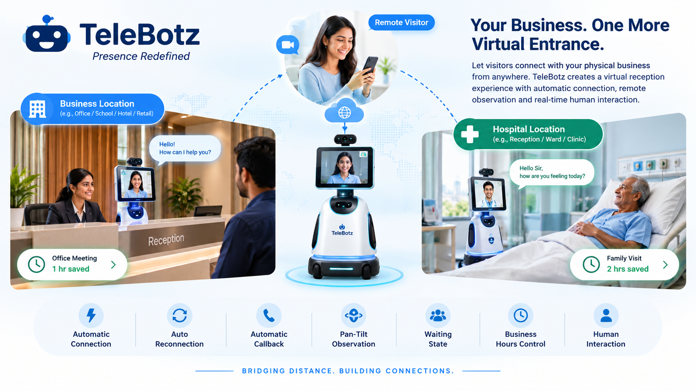
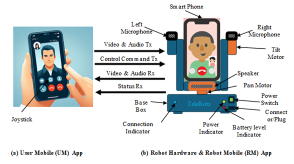

Your physical premises
Your receptionist or staff remain at the location and continue attending to in-person visitors.
Let people visit your physical location virtually. TeleBotz connects remote visitors with the people at your premises through an always-ready, remotely viewable reception experience with automatic connection, live observation and real-time human support.
A virtual point of entry for a real-world place.

A regular video call starts when someone calls someone else. TeleBotz is designed around the visitor and the place they want to reach: a virtual entrance that can be approached online, observed in real time, and answered by a real person without losing the context of the physical premises.
Your receptionist or staff remain at the location and continue attending to in-person visitors.
A remote visitor connects online, observes the reception area through the camera, and interacts with your on-site team.
TeleBotz is designed to make the experience feel closer to approaching a person at a reception desk—not joining a scheduled online meeting.
The visitor opens the business's TeleBotz link during its configured operating hours.
The visitor can use pan-tilt movement for a simple view of the reception area before or during the conversation.
The on-site receptionist attends the remote visitor while continuing to serve people who are physically present.
The experience combines connection management with a sense of physical presence.
Visitors can enter the virtual reception without waiting for someone to manually accept the call.
If the network drops unexpectedly, TeleBotz can attempt to restore the connection automatically.
When a conversation is disconnected, the system can attempt to reconnect or call back the visitor.
Visitors can orient the camera to get a simple view of the reception space before or during the conversation.
If staff are busy, the visitor can be shown that the reception is occupied until the next available team member responds.
The business decides when its virtual entrance is available and can maintain a configured operating schedule.
A virtual entrance may be useful wherever prospective customers, families, students or visitors need to speak with someone at a physical location.
Parents and prospective students could connect with admissions or reception staff without first travelling to campus.
People could make general enquiries and reach the appropriate front-desk team remotely.
Prospective guests could speak with staff before deciding to visit or book.
Customers could approach a real team member for product, service or appointment enquiries.
These are potential application areas. The best initial market will be selected through customer conversations and pilot feedback.
We are looking to speak with a small number of organizations that want to explore a new way for remote visitors to connect with their on-site team.
Discuss a pilot No commitment required. Start with a conversation about your visitor workflow.TeleBotz explores practical telepresence experiences that connect people across distance. Our current focus is a virtual visitor gateway: helping people reach a real person at a physical location without needing to be there in person.
We believe technology should make human interaction easier—not replace it.

Tell us how visitors currently reach your team. We would value the opportunity to understand your needs and explore whether a TeleBotz pilot makes sense.